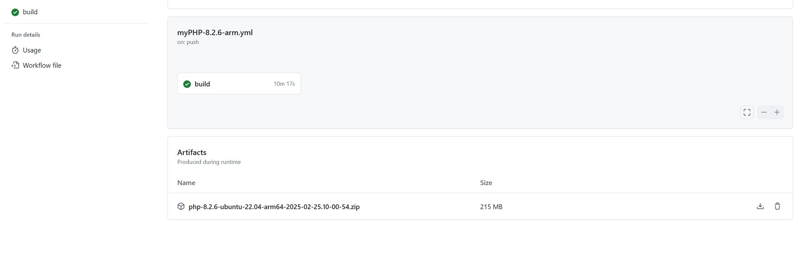
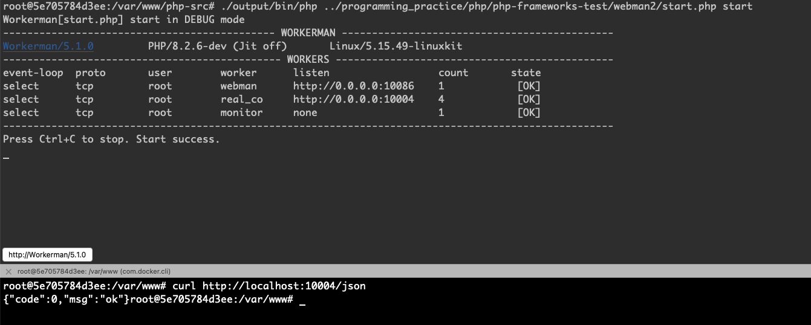

使用GitHub Actions编译方便不使用Docker等工具还要定制PHP版本的用户，降低了部署成本，只需要下载编译后的压缩包即可使用（前提是部署的环境跟编译的环境保持一致，也就是运行与yaml文件的dependence相同的命令解决依赖问题）。
用于公共存储库的GitHub托管的标准运行器。对于公共存储库，使用下表所示工作流标签的作业可在具有关联规范的虚拟机上运行。可以在公共存储库上免费且无限制地使用这些运行器。
| 虚拟机 | 处理器 (CPU) | 内存 (RAM) | 存储 (SSD) | 体系结构 | 工作流标签 |
|---|---|---|---|---|---|
| Linux | 4 | 16 GB | 14 GB | x64 | ubuntu-latest、ubuntu-24.04、ubuntu-22.04、ubuntu-20.04 |
| Windows | 4 | 16 GB | 14 GB | x64 | windows-latest、windows-2025[公共预览版]、windows-2022, windows-2019 |
| Linux [公共预览版] | 4 | 16 GB | 14 GB | arm64 | ubuntu-24.04-arm，ubuntu-22.04-arm |
| macOS | 4 | 14 GB | 14 GB | Intel | macos-13 |
| macOS | 3 (M1) | 7 GB | 14 GB | arm64 | macos-latest、macos-14、macos-15 [公共预览版] |
以ubuntu-22.04-arm编译PHP-8.2.6源码为例，.github/workflows/myPHP-8.2.6-arm.yaml的配置根据压根自行添加运行步骤。
name: myPHP-8.2.6-arm
on:
push:
branches: ["myPHP-8.2.6"] # 仅在 myPHP-8.2.6 分支 push 时触发
pull_request:
branches: ["myPHP-8.2.6"] # 仅在 myPHP-8.2.6 分支 pull_request 时触发
jobs:
build:
runs-on: ubuntu-22.04-arm # 使用 ubuntu-22.04 系统
steps: # 步骤
- name: env # 预设环境变量
run: echo "WORKING_DIR=$PWD" >> $GITHUB_ENV && echo "PREFIX_DIR=$PWD/output" >> $GITHUB_ENV && echo "INI_DIR=$PWD/output/ini" >> $GITHUB_ENV && echo "EXT_DIR=$PWD/'output/bin/php-config --extension-dir'" >> $GITHUB_ENV && TMP_ZIP_DIR=`realpath $PWD/..` && echo "ZIP_DIR=$TMP_ZIP_DIR" >> $GITHUB_ENV && ZIP_FILE="php-8.2.6-ubuntu-22.04-arm64-`date '+%Y-%m-%d.%H-%M-%S'`.zip" && echo "ZIP_FILE=$ZIP_FILE" >> $GITHUB_ENV
- name: apt update # 更新 apt
run: sudo apt update -y
- name: dependence # 安装依赖，主要是扩展的依赖
run: sudo apt install -y pkg-config build-essential autoconf bison re2c libxml2-dev libsqlite3-dev openssl libcurl4 libbz2-dev libavif-dev libfreetype6-dev libfreetype6 libgmp3-dev libwebp-dev libzip-dev libjpeg-dev libsystemd-dev libcurl-ocaml-dev libonig-dev libedit-dev libsnmp-dev libxslt1-dev libzip-dev libpq-dev libpq5
- name: checkout # 检出代码，"actions/checkout@v4" 是 GitHub 提供的一个 action，用于检出代码
uses: actions/checkout@v4
with:
ref: myPHP-8.2.6 # 检出 myPHP-8.2.6 分支
- name: buildconf # 构建 configure
run: ./buildconf -f
- name: configure # 编译配置，添加了较为常见的扩展
run: ./configure --prefix=${{ env.PREFIX_DIR }} --with-config-file-path=${{ env.INI_DIR }} --enable-embed --enable-fpm --enable-phpdbg --enable-debug --enable-bcmath --enable-calendar --enable-exif --enable-gd --enable-intl --enable-mbstring --enable-pcntl --enable-shmop --enable-soap --enable-sockets --enable-sysvmsg --enable-sysvshm --enable-mysqlnd --enable-phar --enable-filter --enable-iconv --with-fpm-user=www-data --with-fpm-group=www-data --with-fpm-systemd --with-openssl --with-zlib --with-bz2 --with-curl --with-ffi --with-avif --with-webp --with-jpeg --with-freetype --with-gettext --with-gmp --with-mysqli --with-pdo-mysql --with-pdo-pgsql --with-pgsql --with-libedit --with-readline --with-snmp --with-xsl --with-zip --with-pear --with-openssl-dir=/usr/include/openssl
- name: make # 编译
run: make
- name: make install # 安装
run: make install
- name: mkdir # 创建 php.ini 目录
run: mkdir -p ${{ env.INI_DIR }}
- name: cp # 复制 php.ini-production 到 php.ini
run: cp ${{ env.WORKING_DIR }}/php.ini-production ${{ env.INI_DIR }}/php.ini
- name: add ini # 添加 extension_dir 到 php.ini
run: echo "extension_dir=${{ env.EXT_DIR }}" >> ${{ env.INI_DIR }}/php.ini
- name: zip # 已经编译完了，可以修改工作目录生成压缩包
run: cd .. && zip -r ${{ env.ZIP_FILE }} ./php-src
- name: upload # 上传 zip
uses: actions/upload-artifact@v4
with:
name: ${{ env.ZIP_FILE }}
path: ${{ env.ZIP_DIR }}/${{ env.ZIP_FILE }}
retention-days: 7
目前只确保在arm64架构下的ubuntu-22.04运行正常，需要先确认yaml文件中的apt命令运行正常，安装好依赖。然后将GitHub Actions发布的zip文件下载解压。

如下图运行即可。
